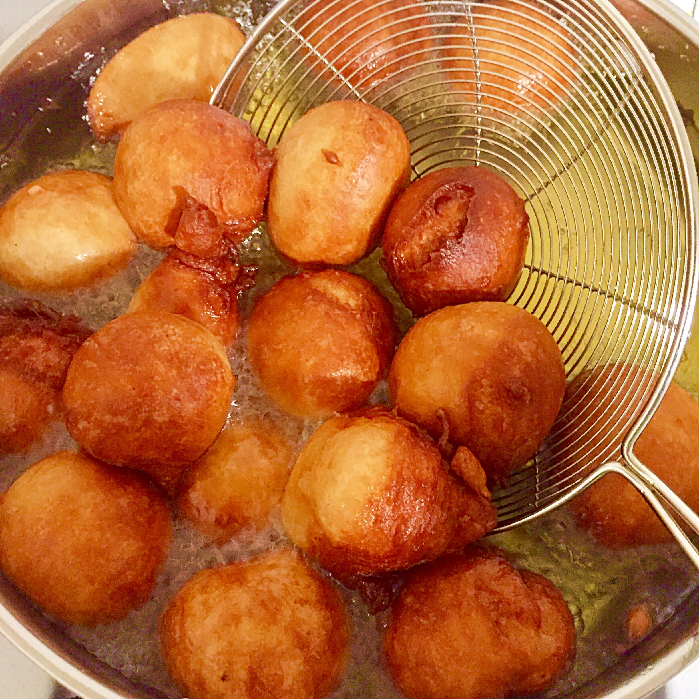

Fun fact about Puff Puff!
Puff puff can be eaten for breakfast, brunch, lunch, dinner, or dessert. It can be eaten in various ways. Puff puff can be eaten as a dessert when paired with custard, smoothie, yogurt, condensed milk, chocolate sauce, caramel, and different flavors of Jam. Others sprinkle powdered sugar on it to give it a sweeter taste.
-
List of ingredients
- 450g All purpose flour ( about 3 cups)*
- 7g fast action yeast (1 satchet)
- 150g granulated sugar
- 1/3 cup powdered milk (optional if vegan, omit )
- 350ml warm water ( about 1½ cup)
- Oil for deep frying
-
Pre-preparations and tips
-
Measure ingredients:
- Measure ingredients and put them in a clean bowl.
-
Get a pan ready
- Have a pan with a lid ready to fry the puff puff.
-
Have a spoon and clingfilm ready:
- Have clingfilm to cover the dough allowing it to expand and a spoon ready to turn over the puff puff when it's frying.
-
Prepare a surface to create the dough balls
- Give yourself a clean space to create the balls or use a ice scream scoop instead
-
-
Preparation
-
Dough Preparation:
- Measure out the powdered milk with the dry ingredients or mix it with the water.
- Add about 200ml of the warm water and start mixing with your hand.
- Add the rest of the water and mix thoroughly.
- The dough should be light but not runny.
- Beat the dough against the sides of the bowl in a slapping motion.
- Cover with cling film and a kitchen napkin.
-
-
Baking/Making
-
- Put in a warm place and allow to rest for 30 – 45mins.
- After 45 mins it should have doubled in size. You can see bubbles on the top.
- Lift the cling film and deflate the dough with your hands or a spatula.
- Heat up oil in a deep pan or wok.
- When oil is hot, start frying the dough in balls.
- Turn manually when one side is golden brown.
- Fry puffs till golden brown.
Tips:- The amount of water added to the dough determines the density of the puff when fried. More water gives a lighter texture. But be careful not to flood.
- There is a technique for getting the ball shape. Get a hand full of dough in the palm of your hand, then try to make a light feast there by squeezing out the dough lightly into the oil. It kind of drops in. Either you squeeze through the top of your fist or the bottom whichever you prefer.
-
-
Cultural Importance
Frequently delighted in during festivities, celebrations, and parties. It conveys with it a feeling of social character and pride. Its presence on the eating table connotes bliss, merriment, and an association with legacy. In Nigeria, for instance, Puff Puff is a staple at occasions going from weddings to birthday events, supporting its job as a social standard.

A picture of puff puff frying in a pan.